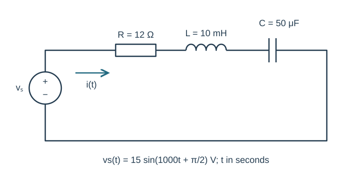
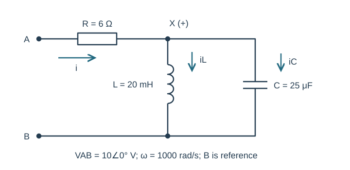
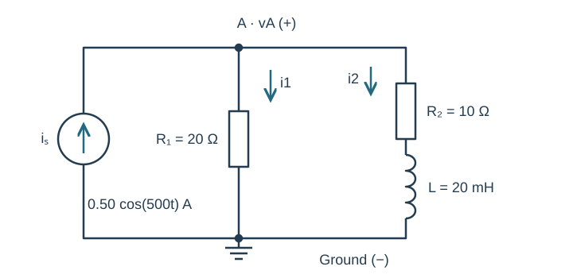
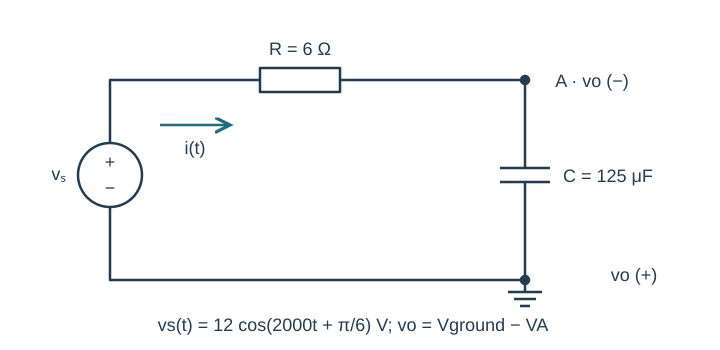
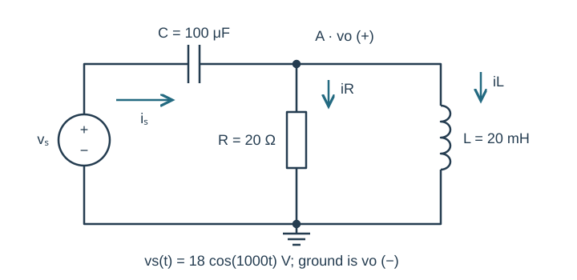

Course practice / Batch 09 / 2026-10-11 PDT
ENGR 202
正弦、相量与阻抗
Sinusoids, phasors & impedance · 第 9 组：HW 1 风格 5 题 + HW 2 风格 5 题
Recover a sinusoid from opposite zero crossings
A zero-offset voltage ranges from −8 V to +8 V. It crosses zero upward at t = 0.50 ms and next crosses zero downward at t = 2.50 ms. Use seconds in the final time-domain expression.
- Find its period, frequency and angular frequency.
- Write a positive-amplitude cosine with principal phase in (−180°,180°], and give its peak phasor.
- Find v(0), the first positive maximum and first minimum at or after zero.
- Sketch one cycle with time in ms, voltage in V, and both crossing directions marked.
中文提示（不含解答）
相邻的反向过零点相隔半个周期；向上过零时，余弦的导数必须为正。
Delay a shifted sine until its cosine phase vanishes
Let \(x(t)=6\sin(400t+5\pi/6)\;\mathrm V\), and \(y(t)=x(t-\pi/1200\;\mathrm s)\).
- Express x and y as positive-amplitude cosines and give their peak phasors.
- Find the delay in ms, its fraction of a period, and the phase change in degrees.
- Compare x and y at t = 0 and t = T/4.
- Draw both phasors on equally scaled axes and identify which waveform is delayed.
中文提示（不含解答）
先把正弦相位改成余弦参考；时间延迟给相位减去 ωΔt。
A quotient lands exactly on the original divisor
Let \(z=-3-j4\) and \(w=1-j2\).
- Calculate z + w, zw, and z/w in rectangular form.
- Convert z, w, zw and z/w into polar form with positive magnitudes and principal phases.
- Check (z/w)w = z and explain the relationship between z and w².
- Plot z, w and the quotient. Label real and imaginary axes and state each quadrant.
中文提示（不含解答）
共轭法能直接给出商的实部虚部；极角要按象限整理到主值范围。
Combine a reversed cosine with two quadrature terms
At a common angular frequency, \(v(t)=4\cos(900t)-3\sin(900t)+2\cos(900t+\pi)\;\mathrm V\).
- Write all three peak phasors in rectangular form and add them.
- Convert the total to polar form and write one positive-amplitude cosine for v(t).
- Verify both expressions at t = 0 and t = π/1800 s.
- Draw a scaled tip-to-tail plot. Explain why the third term reduces the real component while the negative sine adds a positive imaginary component.
中文提示（不含解答）
先处理负号和 π 的相位，三项都写成同一个余弦参考后再相加。
Complete a three-vector target without changing frequency
Two voltages are \(v_1(t)=6\cos(600t)\;\mathrm V\) and \(v_2(t)=4\cos(600t+\pi/2)\;\mathrm V\). The required total has cosine-reference peak phasor \(V_{target}=3+j4\;\mathrm V\).
- Find the additional phasor V3 so that V1 + V2 + V3 = Vtarget.
- Write v3(t) as a positive-amplitude cosine with principal phase.
- Write the target waveform in both cosine/sine-component form and single-cosine form.
- Draw all vectors to scale and verify the original three-waveform sum at t = 0 and t = π/1200 s.
中文提示（不含解答）
缺少的相量等于目标减去已知两个相量；负的实数用正幅值加 180°相位表达。
Series RLC with a sine source and capacitive total
The source \(v_s(t)=15\sin(1000t+\pi/2)\;\mathrm V\) drives R = 12 Ω, L = 10 mH and C = 50 μF in series. Current is clockwise from the source positive terminal. Use passive element voltage drops along this current.
- Draw the impedance circuit including the cosine-reference source phasor.
- Find total impedance and current in rectangular and polar form, then write i(t).
- Calculate VR, VL and VC and verify KVL. State whether current leads or lags source voltage.
- Calculate i(0) and i(π/2000 s), and check the sign of each sample using the time-domain expression.

中文提示（不含解答）
先把源的正弦写成余弦；电感和电容的虚部符号相反。
A series resistor before a parallel LC pair
At ω = 1000 rad/s, terminal A connects through R = 6 Ω to node X. L = 20 mH and C = 25 μF each connect from X to terminal B. No other connections exist. Define input current from A toward X and both reactive-branch currents from X to B.
- Find ZL and ZC and combine them using parallel admittance.
- Find ZAB in rectangular and polar form and classify its net reactance.
- For VAB = 10∠0° V peak, find input current and VX relative to B.
- Find each reactive branch current and verify their sum equals the input current.

中文提示（不含解答）
两个电抗先并联；电感与电容的导纳符号相反，但本题并未刚好抵消。
A current source drives a resistor and series RL branch
The source \(i_s(t)=0.50\cos(500t)\;\mathrm A\) injects current upward into node A. R₁ = 20 Ω connects from A to ground. A second branch consists of R₂ = 10 Ω followed by L = 20 mH from A to ground. Define vA positive at A and both branch currents downward.
- Draw the impedance circuit and compute the total admittance.
- Find VA in rectangular and polar form and write vA(t).
- Find both branch currents and verify KCL.
- Predict vA(0) and vA(π/1000 s). Explain why the resistor-only branch current is in phase with node voltage, not necessarily with source current.

中文提示（不含解答）
先合并第二支路的串联 R 与 L；节点电压是源电流除以总导纳。
Measure a series capacitor with reversed probes
The source \(v_s(t)=12\cos(2000t+\pi/6)\;\mathrm V\) drives R = 6 Ω followed by C = 125 μF. The lower capacitor plate and source negative terminal are grounded. Node A is between R and C. Define current positive from the source through R toward A. The output probes are reversed: vo = V(ground) − V(A), so output is positive at ground and negative at A.
- Find the source phasor, total impedance and current phasor.
- First find VA using the ordinary capacitor divider; then find Vo using the stated polarity.
- Give Vo in rectangular/polar form and write vo(t).
- Check Vs = VR + VA and compute vo(0) and vo(π/4000 s). Explain why changing the output reference does not change the physical circuit current.

中文提示（不含解答）
先按通常上正下负算出电容电压，再根据输出探针方向改变符号。
A capacitor feeds a parallel RL output
The source \(v_s(t)=18\cos(1000t)\;\mathrm V\) connects through C = 100 μF to node A. R = 20 Ω and L = 20 mH each connect from A to ground. Output vo is positive at A. Source current travels through C toward A; load currents are downward.
- Find the parallel-load impedance and total input impedance.
- Find the source-current and output-voltage phasors in rectangular and polar form, and write vo(t).
- Calculate the two load currents and capacitor voltage drop from source to A. Verify KCL and KVL.
- Predict vo at t = 0 and t = π/2000 s. For optional LTspice, specify frequency in Hz and equivalent sine-source phase; compare these two positions in a late steady-state cycle, after transients settle. Include axis units and consistent current signs.

中文提示（不含解答）
电容与并联负载整体串联；不能把三个元件的阻抗直接相加。